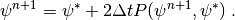
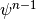
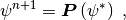
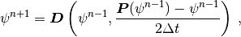
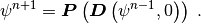
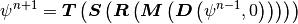
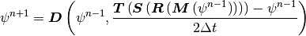

4. Coupling of Dynamical Core and Parameterization Suite¶
The CAM6.0 cleanly separates the parameterization suite from the dynamical core, and makes it easier to replace or modify each in isolation. The dynamical core can be coupled to the parameterization suite in a purely time split manner or in a purely process split one, as described below.
Consider the general prediction equation for a generic variable
 ,
,
(1)
where denotes a prognostic variable such as temperature or
horizontal wind component. The dynamical core component is denoted
 and the physical parameterization suite
and the physical parameterization suite  .
.
A three-time-level notation is employed which is appropriate for the semi-implicit Eulerian spectral transform dynamical core. However, the numerical characteristics of the physical parameterizations are more like those of diffusive processes rather than advective ones. They are therefore approximated with forward or backward differences, rather than centered three-time-level forms.
The Process Split coupling is approximated by
(2)
where  is calculated first from
is calculated first from
(3)
The Time Split coupling is approximated by
(4)
(5)

The distinction is that in the Process Split approximation the
calculations of and are both based on the same past
state,

, while in the Time Split approximations and are calculated sequentially, each based on the
state produced by the other.
As mentioned above, the Eulerian core employs the three-time-level
notation in (2)-(5). Eqns. (2)-(5) also apply to two-time-level
finite volume, semi-Lagrangian and spectral element (HOMME) cores by
dropping centered  term dependencies, and replacing -1
by and
term dependencies, and replacing -1
by and  by
by  .
.
The parameterization package can be applied to produce an updated field as indicated in (3) and (5). Thus (5) can be written with an operator notation
(6)

where only the past state is included in the operator dependency for notational convenience. The implicit predicted state dependency is understood. The Process Split equation (2) can also be written in operator notation as
(7)

where the first argument of  denotes the
prognostic variable input to the dynamical core and the second denotes
the forcing rate from the parameterization package, e.g. the heating
rate in the thermodynamic equation. Again only the past state is
included in the operator dependency, with the implicit predicted state
dependency left understood. With this notation the Time Split system
(4) and (5) can be written
denotes the
prognostic variable input to the dynamical core and the second denotes
the forcing rate from the parameterization package, e.g. the heating
rate in the thermodynamic equation. Again only the past state is
included in the operator dependency, with the implicit predicted state
dependency left understood. With this notation the Time Split system
(4) and (5) can be written
(8)

The total parameterization package in CAM6.0 consists of a sequence of components, indicated by
(9)
where  denotes (Moist) precipitation processes,
denotes (Moist) precipitation processes,  denotes clouds and Radiation,
denotes clouds and Radiation,  denotes the Surface model, and
denotes the Surface model, and
 denotes Turbulent mixing. Each of these in turn is subdivided
into various components: includes an optional dry adiabatic
adjustment (normally applied only in the stratosphere), moist
penetrative convection, shallow convection, and large-scale stable
condensation; first calculates the cloud parameterization
followed by the radiation parameterization; provides the
surface fluxes obtained from land, ocean and sea ice models, or
calculates them based on specified surface conditions such as sea
surface temperatures and sea ice distribution. These surface fluxes
provide lower flux boundary conditions for the turbulent mixing
which is comprised of the planetary boundary layer
parameterization, vertical diffusion, and gravity wave drag.
denotes Turbulent mixing. Each of these in turn is subdivided
into various components: includes an optional dry adiabatic
adjustment (normally applied only in the stratosphere), moist
penetrative convection, shallow convection, and large-scale stable
condensation; first calculates the cloud parameterization
followed by the radiation parameterization; provides the
surface fluxes obtained from land, ocean and sea ice models, or
calculates them based on specified surface conditions such as sea
surface temperatures and sea ice distribution. These surface fluxes
provide lower flux boundary conditions for the turbulent mixing
which is comprised of the planetary boundary layer
parameterization, vertical diffusion, and gravity wave drag.
Defining operators following (6) for each of the parameterization components, the couplings in CAM6.0 are summarized as:
TIME SPLIT
(10)

PROCESS SPLIT
(11)

The labels Time Split and Process Split refer to the coupling of the dynamical core with the complete parameterization suite. The components within the parameterization suite are coupled via time splitting in both forms.
The Process Split form is convenient for spectral transform models. With Time Split approximations extra spectral transforms are required to convert the updated momentum variables provided by the parameterizations to vorticity and divergence for the Eulerian spectral core, or to recalculate the temperature gradient for the semi-Lagrangian spectral core. The Time Split form is convenient for the finite-volume core which adopts a Lagrangian vertical coordinate. Since the scheme is explicit and restricted to small time-steps by its non-advective component, it sub-steps the dynamics multiple times during a longer parameterization time step. With Process Split approximations the forcing terms must be interpolated to an evolving Lagrangian vertical coordinate every sub-step of the dynamical core. Besides the expense involved, it is not completely obvious how to interpolate the parameterized forcing, which can have a vertical grid scale component arising from vertical grid scale clouds, to a different vertical grid. [Wil02] compares simulations with the Eulerian spectral transform dynamical core coupled to the CCM3 parameterization suite via Process Split and Time Split approximations.